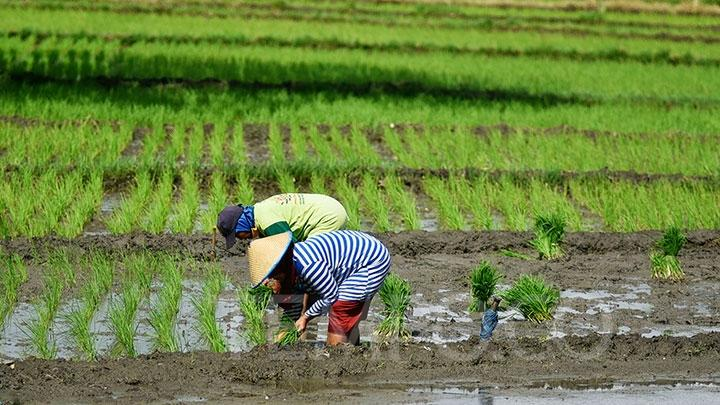

Selamat Datang !
Gunungkidul adalah sebuah kabupaten di Provinsi Daerah Istimewa Yogyakarta, Indonesia. Daerah ini terkenal dengan pantai-pantai yang indah, gua-gua alam, dan pegunungan kapur yang mempesona. Gunungkidul juga dikenal dengan keindahan alamnya yang masih alami dan belum terlalu banyak terjamah oleh aktivitas manusia. Di sini, Anda dapat menemukan pantai-pantai cantik seperti Pantai Baron, Pantai Kukup, dan Pantai Drini, serta gua-gua menakjubkan seperti Gua Pindul dan Gua Jomblang. Selain itu, Gunungkidul juga memiliki kearifan lokal dan kebudayaan yang kaya, membuatnya menjadi tempat yang menarik untuk dikunjungi bagi pecinta alam dan budaya.
DETAIL
sawah padi
Dusun Ngelo terhampar di bawah sinar matahari yang hangat, dengan gunung-gunung menjulang di kejauhan. Di sana, sawah-sawah hijau membentang sejauh mata memandang, dengan air mengalir perlahan-lahan di antara petak-petak hijau yang subur. Petani-petani setia bekerja di sawah-sawah ini, merawat padi dengan penuh kehati-hatian, sementara burung-burung camar terbang rendah di langit biru yang cerah. Suasana damai dan keindahan alam menyelimuti Dusun Ngelo, di mana sawah-sawah padi menjadi bagian tak terpisahkan dari kehidupan sehari-hari.
Peternakan sapi
Peternakan sapi di Dusun Ngelo adalah pemandangan yang mengagumkan. Sapi-sapi yang gagah berdiri di padang rumput hijau, sementara peternak dengan penuh keahlian merawat dan mengurus mereka. Suara riang anak-anak sapi menggema di udara, sementara peternak bekerja keras untuk memastikan kesejahteraan ternak mereka. Di sore hari, sapi-sapi itu kembali ke kandang mereka sambil mengunyah rumput hijau yang segar. Peternakan sapi menjadi bagian integral dari kehidupan masyarakat Dusun Ngelo, memberikan susu dan daging yang berkualitas tinggi serta menciptakan ikatan yang kuat antara manusia dan hewan.
produksi pupuk
Pupuk sangat penting dalam pertanian di Dusun Ngelo. Petani dengan penuh semangat menggunakan pupuk organik untuk memperkaya tanah mereka, sehingga tanaman dapat tumbuh subur dan menghasilkan hasil yang melimpah. Mereka mengaplikasikan pupuk dengan teliti, memastikan bahwa tanaman mereka mendapatkan nutrisi yang dibutuhkan untuk tumbuh dengan baik. Dengan menggunakan pupuk secara bijaksana, petani di Dusun Ngelo dapat menjaga kesuburan tanah mereka dan memastikan hasil panen yang melimpah setiap musimnya.
Peternakan sapi
Peternakan sapi di Dusun Ngelo adalah pemandangan yang mengagumkan. Sapi-sapi yang gagah berdiri di padang rumput hijau, sementara peternak dengan penuh keahlian merawat dan mengurus mereka. Suara riang anak-anak sapi menggema di udara, sementara peternak bekerja keras untuk memastikan kesejahteraan ternak mereka. Di sore hari, sapi-sapi itu kembali ke kandang mereka sambil mengunyah rumput hijau yang segar. Peternakan sapi menjadi bagian integral dari kehidupan masyarakat Dusun Ngelo, memberikan susu dan daging yang berkualitas tinggi serta menciptakan ikatan yang kuat antara manusia dan hewan.
Email:
info@example.com
Call:
+1 5589 55488 55s